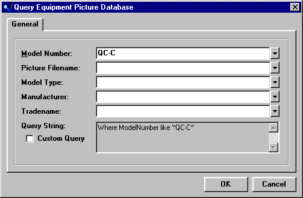

Query Equipment Picture Database (Equipment Picture Database Window) |
  
|
Query Equipment Picture Database (Equipment Picture Database Window) |
|
Icon:  . Keyboard Shortcut: Alt, A, Q (click the Generate Query button on Equipment Picture Database window).
. Keyboard Shortcut: Alt, A, Q (click the Generate Query button on Equipment Picture Database window).
Opens the Query Equipment Picture Database window, which lets you query the database in order to view only certain models.

Model Number, Picture Filename, etc.: Entering anything into any of these inputs narrows the search to include only those models that match the characters you typed. As you type something into these inputs, the Query String box will be updated to show the "where" clause that will be used to generate the query of the database.
Custom Query: If you are familiar with database queries and would like to enter your own "where" clause into this input, check this box and enter your query string into the Query String input.
Query String: If the Custom Query box is unchecked, shows the query that is generated from what you have entered into the Model Number, Picture Filename, etc., inputs. If the Custom Query box is checked, specifies your own custom string that you want to use to query the database.
OK Button: Executes the query and closes this dialog. The list on the Equipment Picture Database window will immediately be updated to show the results of the query. Note that if you entered a custom query and there is a problem with its syntax, an error message will be displayed.
Cancel Button: Closes this dialog without making any changes.